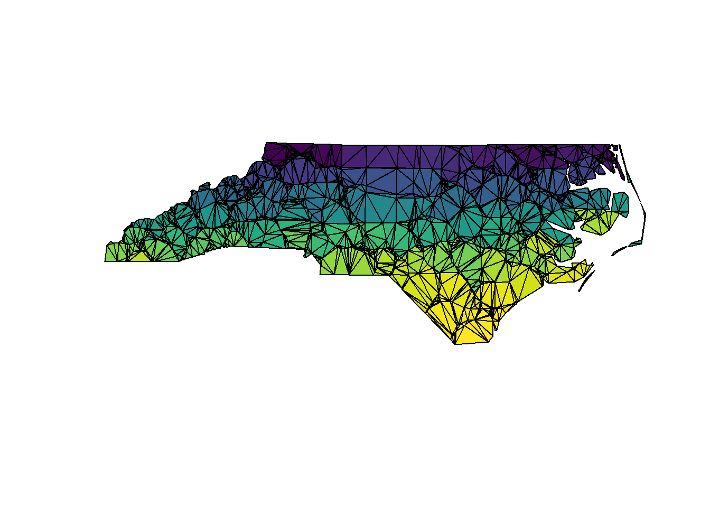
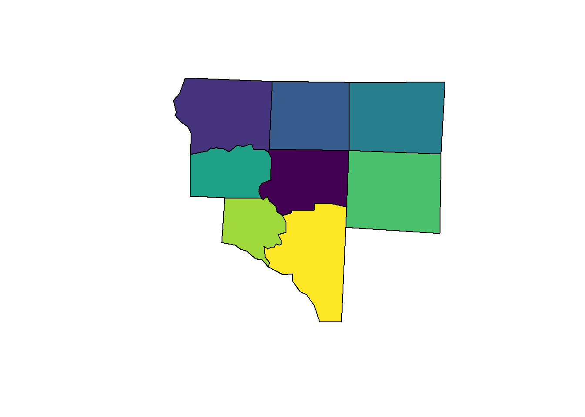
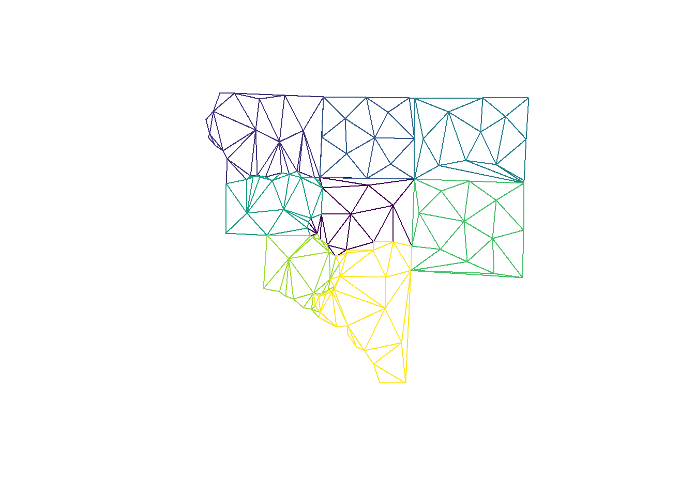
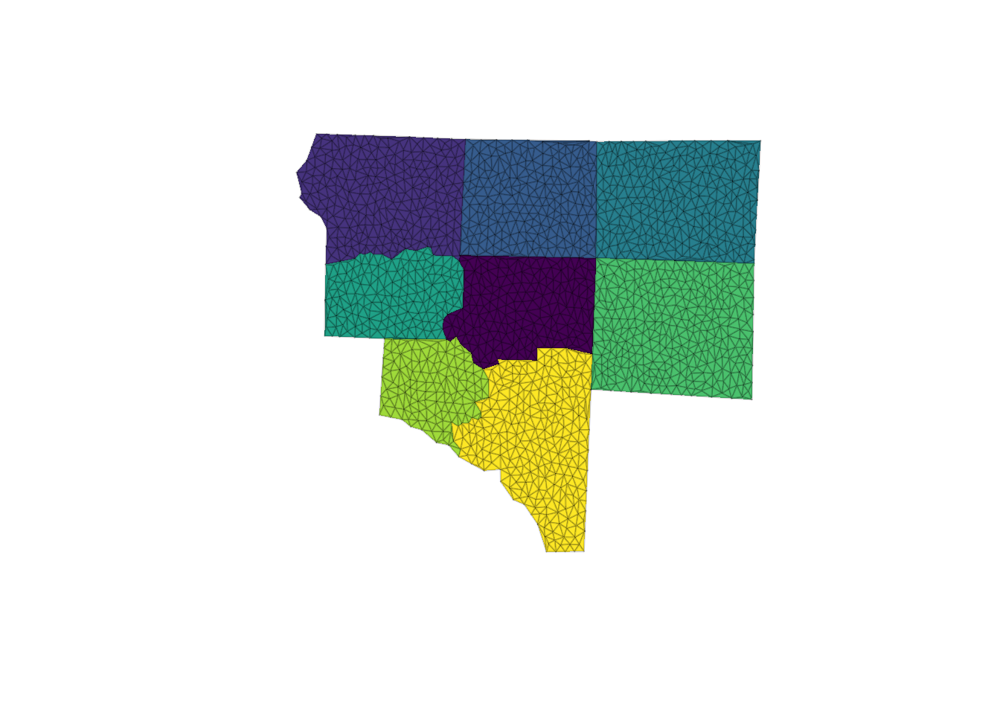
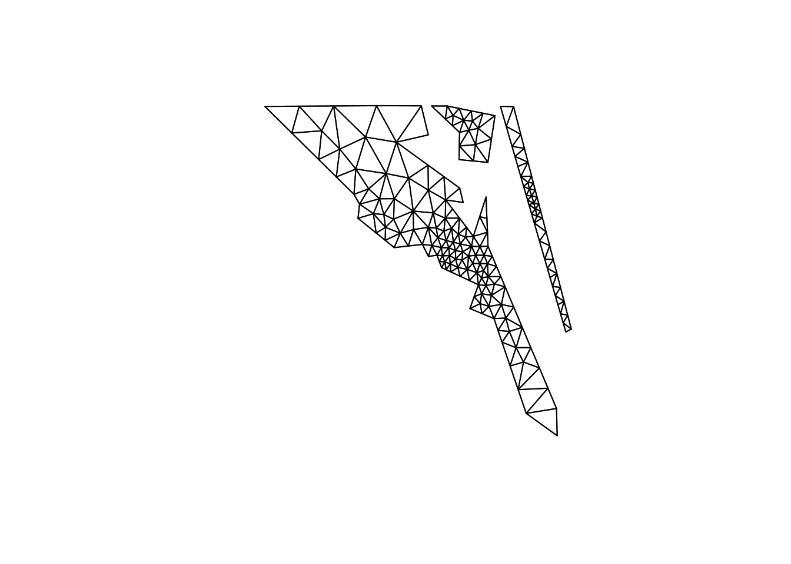
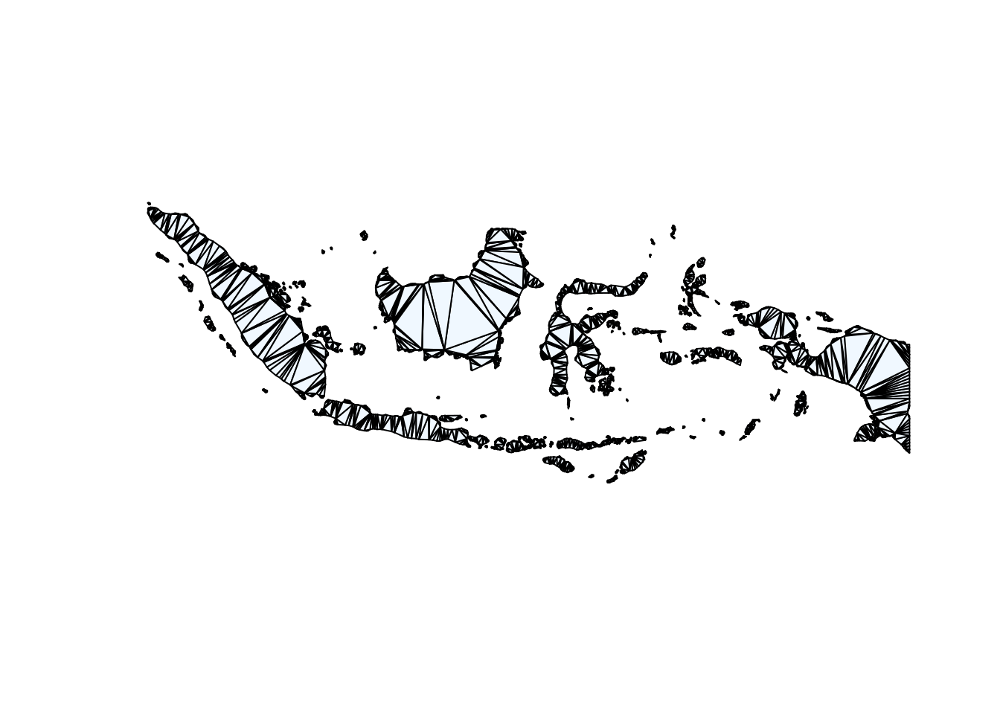
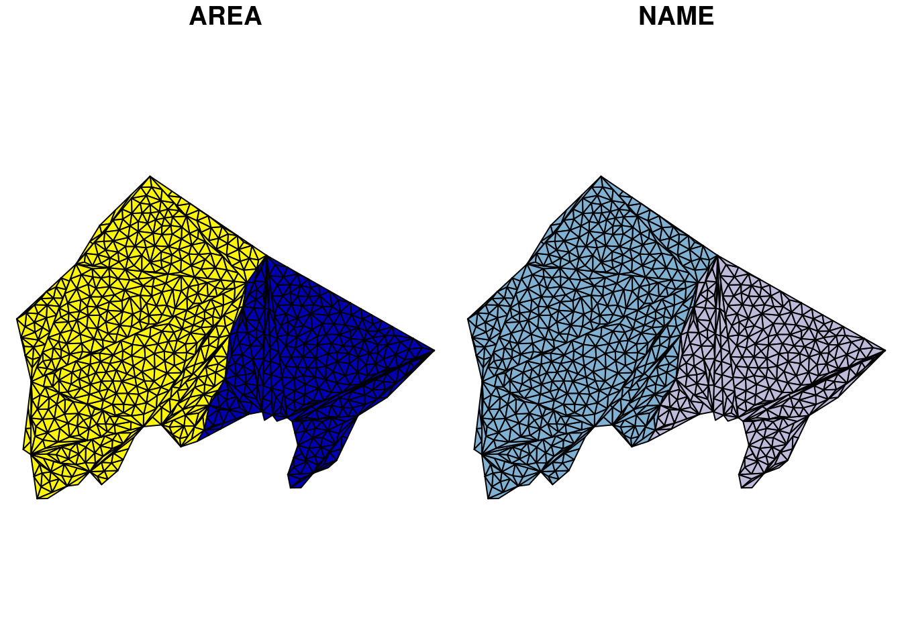
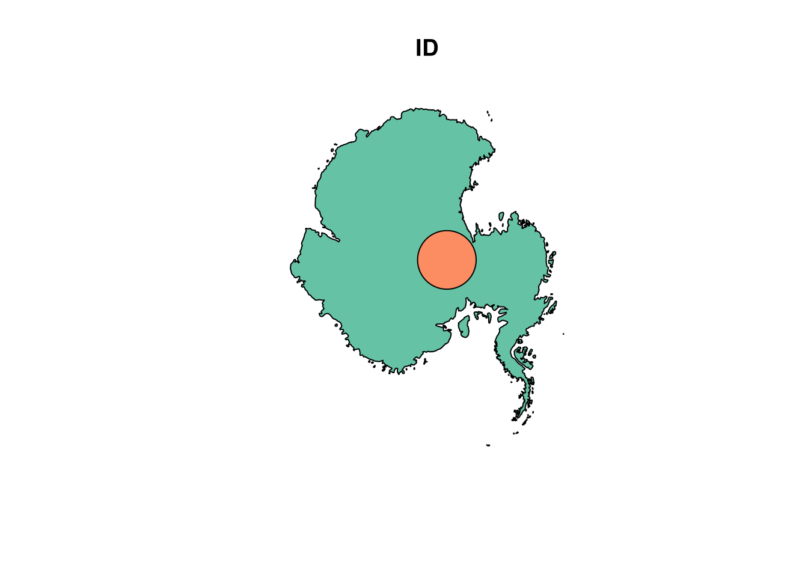
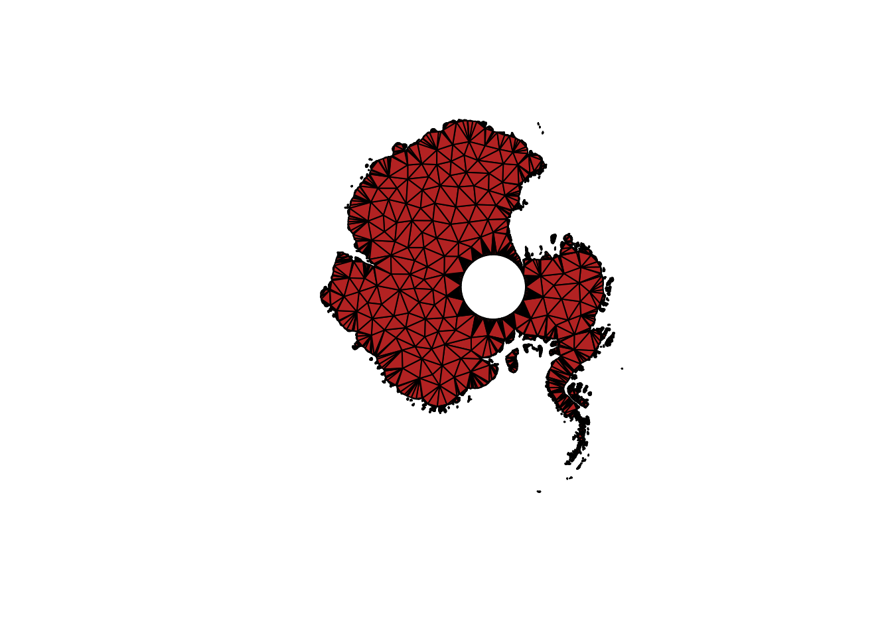
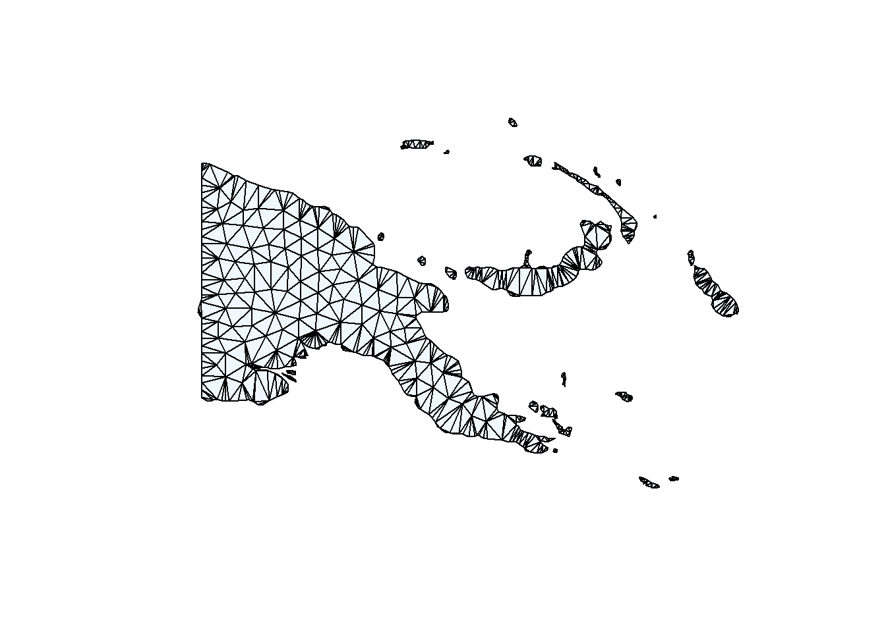

This is a basic example which shows you how to decompose a MULTIPOLYGON sf data frame object into a GEOMETRYCOLLECTION sf data frame object made of triangles:
library(sf)## Linking to GEOS 3.5.1, GDAL 2.1.2, proj.4 4.9.3library(sfdct)
nc <- st_read(system.file("shape/nc.shp", package="sf"))## Reading layer `nc' from data source `/usr/local/lib/R/site-library/sf/shape/nc.shp' using driver `ESRI Shapefile'
## converted into: POLYGON
## Simple feature collection with 100 features and 14 fields
## geometry type: MULTIPOLYGON
## dimension: XY
## bbox: xmin: -84.32385 ymin: 33.88199 xmax: -75.45698 ymax: 36.58965
## epsg (SRID): 4267
## proj4string: +proj=longlat +datum=NAD27 +no_defsnc_triangles <- ct_triangulate(nc)
plot(st_geometry(nc_triangles), col = viridisLite::viridis(nrow(nc_triangles)))
We can use the underlying RTriangle::triangulate arguments to hone the triangles we get.
i_feature <- 25
nc1 <- nc[c(i_feature, unlist(st_touches(nc[i_feature, ], nc))), ]## although coordinates are longitude/latitude, it is assumed that they are planarplot(st_geometry(nc1),col = viridisLite::viridis(nrow(nc1)))
## subvert st_area because we really don't want m^2
st_crs(nc1) <- NA
areas <- st_area(nc1)
st_crs(nc1) <- st_crs(nc)
nc1_triangles <- ct_triangulate(nc1, a = min(areas)/5)
bcol <- viridisLite::viridis(nrow(nc1_triangles))
plot(st_geometry(nc1_triangles), col = NA, border = bcol)
nc2_triangles <- ct_triangulate(nc1, a = min(st_area(st_set_crs(nc1, NA)))/25)
plot(st_geometry(nc2_triangles), col = NA, border = bcol)Get a grouped triangulated set from a MULTIPOINT. Note how these aren’t constrained by the edges of the input polygons (because we threw those away!) but these are controlled to have a smaller maximum area.
Area is calculated in the native coordinates, assuming “planar coordinates”, with no respect to the real world.
## manual cast to MULTIPOINT originally required
#st_geometry(nc1) <- st_sfc(lapply(unlist(unlist(st_geometry(nc1), recursive = FALSE), recursive = FALSE), st_multipoint), crs = st_crs(nc1))
mp_nc1 <- st_cast(nc1, "MULTIPOINT")
mtriangs <- ct_triangulate(nc1, a = 0.0005)
plot(st_geometry(mtriangs), col = viridisLite::viridis(nrow(mtriangs)), border = "#00000033")
plot(nc[4, ]$geometry)
## q, minimum angle
## D, Delaunay criterion is met
plot(ct_triangulate(nc[4, ]$geometry, q = 35, D = TRUE), add = TRUE, col = "transparent")
POLYGON triangles in GEOMETRYCOLLECTION will be re-triangulated. All vertices in the GC will be included, as well as all edges of all component geometries, but each component is triangulated individually, not with reference to the entire set.
We can use piping to chain things together.
data("map_world", package= "sfdct")
library(dplyr)##
## Attaching package: 'dplyr'## The following objects are masked from 'package:stats':
##
## filter, lag## The following objects are masked from 'package:base':
##
## intersect, setdiff, setequal, uniong <- map_world %>% dplyr::filter(startsWith(ID, "Indonesia")) %>% ct_triangulate() %>% st_geometry()
plot(g, col = "aliceblue", main = "")
nc_triangles[1:2, c(1, 5)] %>% st_transform("+proj=laea") %>% ct_triangulate(a = 2e6) %>% plot()
data("antarctica")
plot(antarctica)
a <- ct_triangulate(st_difference(antarctica[1], antarctica[2, ]), a = 5e10)## Warning: attribute variables are assumed to be spatially constant
## throughout all geometriesplot(st_geometry(a), col = "firebrick")
The output of ct_triangulate can be the input to another call to it.
m <- map_world %>% dplyr::filter(startsWith(ID, "Papua New Guinea"))
plotme <- function(x) {plot(st_geometry(x), col = "aliceblue"); x}
m %>% ct_triangulate(a = 0.2, D = TRUE) %>% plotme() 
## Simple feature collection with 1 feature and 1 field
## geometry type: GEOMETRYCOLLECTION
## dimension: XY
## bbox: xmin: 140.8623 ymin: -11.63057 xmax: 155.9576 ymax: -1.353223
## epsg (SRID): 4326
## proj4string: +proj=longlat +datum=WGS84 +no_defs
## ID geometry
## 1 Papua New Guinea GEOMETRYCOLLECTION(POLYGON(...